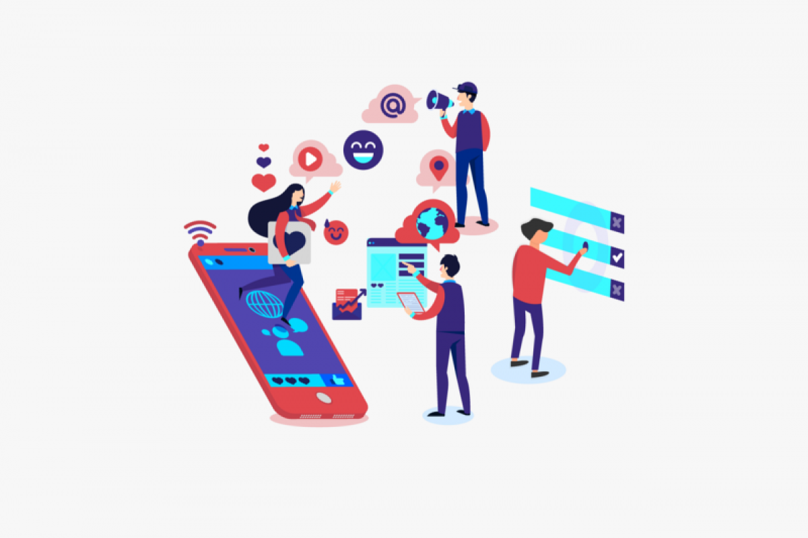

Apa Itu Bijak Bermedia Sosial?
Bijak bermedia sosial adalah kemampuan menggunakan media sosial secara sadar, bertanggung jawab, dan etis, dengan mempertimbangkan dampak dari setiap tindakan yang dilakukan di dunia maya. Dalam kehidupan modern saat ini, media sosial menjadi bagian yang tak terpisahkan dari aktivitas sehari-hari. Orang menggunakannya untuk berkomunikasi, mencari informasi, berbagi pengalaman, hingga membangun identitas diri.
Namun, di balik semua kemudahan dan manfaat itu, media sosial juga memiliki potensi risiko yang besar jika tidak digunakan dengan bijak. Sikap bijak dalam bermedia sosial mencakup beberapa hal penting:
- Berpikir terlebih dahulu sebelum membagikan informasi
- Memverifikasi kebenaran informasi sebelum membagikannya
- Menjaga etika dalam berkomunikasi dengan bahasa yang sopan
- Menghormati privasi diri sendiri dan orang lain
- Mempertimbangkan dampak jangka panjang dari setiap unggahan
Mengapa Bijak Bermedia Sosial Itu Penting?
Media sosial telah mengubah cara kita berkomunikasi dan berinteraksi. Dengan jutaan pengguna aktif setiap harinya, platform media sosial memiliki pengaruh yang sangat besar dalam membentuk opini publik dan menyebarkan informasi. Namun, kekuatan ini juga membawa tanggung jawab besar.
Penyebaran informasi yang tidak bertanggung jawab dapat menyebabkan berbagai masalah, mulai dari kesalahpahaman pribadi hingga kerusuhan sosial. Oleh karena itu, bijak dalam menggunakan media sosial bukan lagi sekadar pilihan, melainkan kebutuhan.
Setiap individu yang aktif di media sosial harus menyadari bahwa kata-kata dan konten yang dibagikan dapat memiliki dampak jangka panjang, baik bagi diri sendiri maupun orang lain. Dengan bersikap bijak, kita bisa membantu menciptakan ekosistem digital yang lebih sehat dan dapat dipercaya.
Dampak Negatif Media Sosial
Penggunaan media sosial yang tidak bijak dapat menimbulkan berbagai dampak negatif, antara lain:
- Penyebaran Hoax dan Disinformasi - Informasi palsu dapat menyebar dengan cepat dan menyebabkan kepanikan serta kesalahpahaman.
- Cyberbullying - Komentar negatif dan ujaran kebencian dapat menyebabkan trauma psikologis pada korban.
- Pencurian Identitas dan Data Pribadi - Informasi pribadi yang dibagikan secara sembarangan dapat disalahgunakan oleh pihak tidak bertanggung jawab.
- Kecanduan Media Sosial - Penggunaan berlebihan dapat mengganggu produktivitas dan kesehatan mental.
- Gangguan Privasi - Foto, data diri, atau unggahan pribadi bisa dicuri lalu disalahgunakan untuk membuat akun palsu atau melakukan penipuan.
Statistik Penggunaan Media Sosial di Indonesia
Berikut adalah beberapa data statistik terkait penggunaan media sosial di Indonesia yang menunjukkan pentingnya edukasi bijak bermedia sosial:
Data di atas menunjukkan betapa pentingnya edukasi tentang penggunaan media sosial yang bijak. Dengan jumlah pengguna yang sangat besar dan waktu penggunaan yang cukup lama, potensi dampak negatif dari media sosial juga semakin besar jika tidak digunakan dengan bijak.
Konten Interaktif dan Edukatif
Berikut adalah beberapa konten interaktif untuk membantu Anda memahami lebih dalam tentang bijak bermedia sosial:
.jpeg)
Kasus Nyata Penyalahgunaan Media Sosial
Pelajari beberapa kasus nyata penyalahgunaan media sosial dan dampaknya bagi pelaku maupun korban.
Pelajari Kasus
Media Sosial Menjadi Platform Komunikasi Modern Di Era Digital
Pemahaman mendalam tentang media sosial menjadi sangat relevan dalam berbagai ranah, mulai dari jurnalistik, komunikasi politik, hingga public relations.
Lihat selengkapnya.jpeg)
Etika Bermedia Sosial
Kumpulan video edukatif tentang cara menggunakan media sosial dengan bijak dan bertanggung jawab.
Tonton VideoEtika Berkomunikasi di Media Sosial
Media sosial adalah ruang publik virtual yang memerlukan etika berkomunikasi yang baik. Berikut adalah prinsip-prinsip etika yang perlu diperhatikan:
- Gunakan bahasa yang sopan dan santun meskipun berdiskusi dengan orang yang tidak dikenal
- Hindari penggunaan kata-kata kasar, menghina, atau merendahkan orang lain
- Hargai perbedaan pendapat dan jangan memaksakan pendapat pribadi
- Jangan menyebarkan informasi pribadi orang lain tanpa izin
- Berpikir sebelum berkomentar, pertimbangkan perasaan penerima komentar
Cara Mengenali Berita Hoax
Hoax atau berita bohong dapat dengan mudah menyebar di media sosial. Berikut cara mengenali dan melawannya:
- Periksa sumber berita - pastikan berasal dari sumber yang kredibel
- Cari versi lain dari berita tersebut di media terpercaya
- Perhatikan tanggal publikasi - hoax seringkali menggunakan berita lama
- Gunakan tools verifikasi fakta seperti Turnbackhoax.id atau CekFakta.com
- Jangan langsung membagikan meskipun berita tersebut sesuai dengan keyakinan pribadi
- Laporkan konten hoax kepada platform media sosial
Tips Praktis Bermedia Sosial
Tips Bijak Bermedia Sosial
- Berpikir sebelum membagikan - Jangan asal posting! Pastikan konten yang dibagikan tidak menyinggung, menyesatkan, atau merugikan pihak lain.
- Jaga etika dan sopan santun - Gunakan bahasa yang baik dan sopan, meskipun hanya di dunia maya. Ingat, jejak digital bisa bertahan lama.
- Saring informasi sebelum percaya atau sebar - Cek kebenaran informasi sebelum menyebarkannya, terutama berita atau isu sensitif.
- Jaga privasi pribadi dan orang lain - Jangan sembarangan membagikan data pribadi atau informasi milik orang lain tanpa izin.
- Gunakan media sosial untuk hal positif - Bagikan hal-hal yang inspiratif, edukatif, dan membawa dampak baik bagi orang lain.